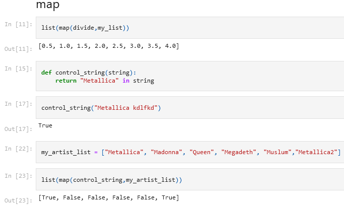
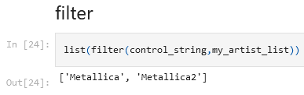
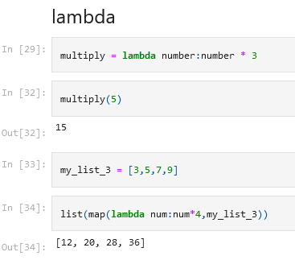

map, filter, lambda
# map (func, *iterables) şeklinde çalışan bir metottur. Bir fonksiyonu alıp liste veya liste benzeri bir şeyin içinde iterables (iterate true, yani tek tek gezmek) gezip belli koşullar sağlandığında bize kısa yoldan değer döndürmeye yarıyor.

# filter metodu ise map'den farklı olarak eğer bir eşleşme bulursa yani true dönerse onu alıp bir listeye yazmaya yarıyor

#lambda
#lambda tekk kullanımlık tek satırlık işlem ile küçük bir fonksiyon yazmaktır
# böylelikle o fonksiyonu tanımlamamıza gerek kalmaz. lambda çok sık kullanılan
# bir yöntem değildir
multiply = lambda num:num*3
print(multiply(5))
my_list_3 = [3,4,5,6]
print(list(map(lambda num:num*4,my_list_3)))
